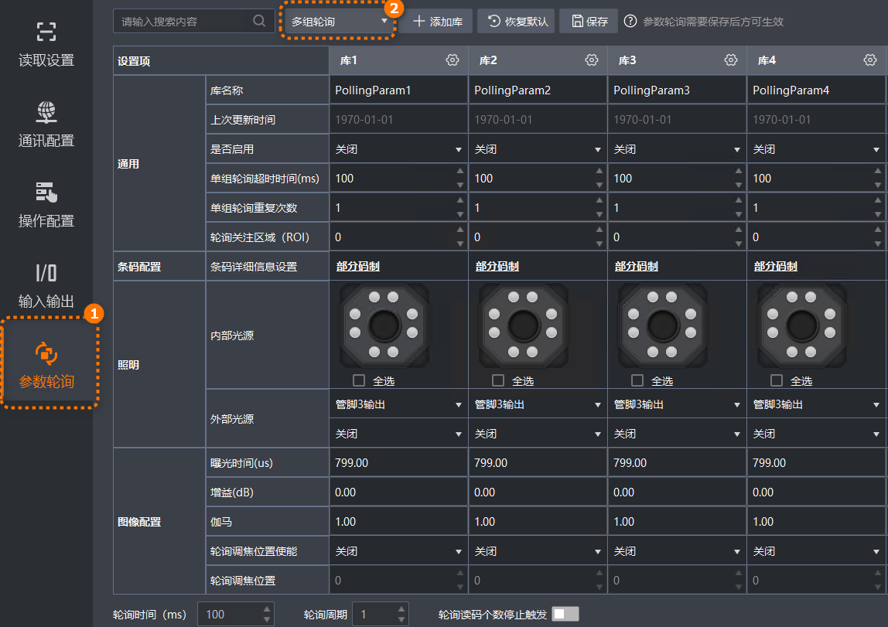
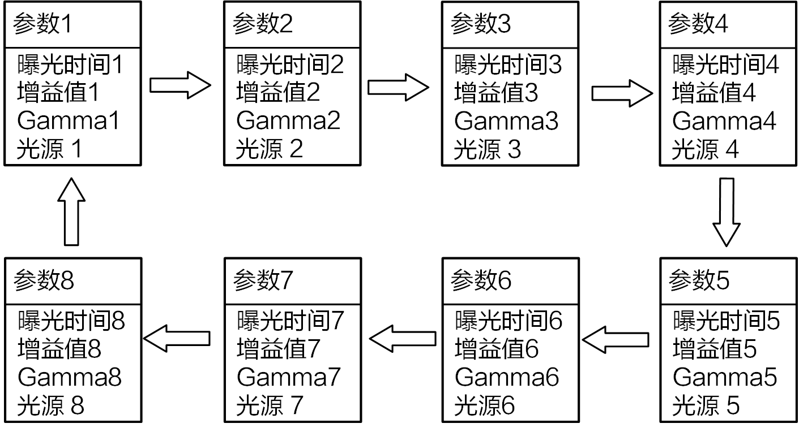

针对动态复杂读码场景（如条码位置变化、光线波动等），参数轮询功能通过预设多组成像参数组合，读码器取流时自动切换参数适配环境变化，确保动态读码场景下条码识别的稳定性与准确性。本章节以开启多组参数轮询为例，为您介绍参数轮询功能。
读码器已关闭实时取流。
如果读码器开启实时取流，不支持配置参数轮询，配置界面参数置灰。
已配置读码器的输入触发模式参数为开启，且触发源参数不为“亮度感应触发”。

您需启用任意两组及以上轮询参数，读码器工作时轮换应用启用的轮询库参数进行读码，直至读取到条码后停止轮询。8套参数之间的轮询示意图如下图所示，轮询规则为：由最优参数组开始，从前往后依次轮换已启用的参数组。例如启用的轮询组为1、2、3、4、5，当前使用轮询组3进行读码（即轮询组3作为最优组），则轮询顺序为：3、4、5、1、2，如此为一个轮询周期。

如需使用单组轮询，可在参数轮询模式选择框处选择库*（*为轮询组序号），当前参数轮询界面只支持配置选择轮询组的参数，其他轮询组参数不支持配置且置灰，读码器工作时应用当前选择的轮询组参数。
每组轮询库可配置的参数说明如下。
每组轮询参数组中的可配置参数与读码器固件版本和硬件相关，实际可配置参数请以界面显示为准。
修改后的参数所在单元格标紫处理。
单组参数轮询可配置参数与多组参数轮询类似，本文不再单独介绍单组参数轮询参数。
自定义当前轮询组的名称。
显示最近一次修改轮询组参数的时间。如果从未修改，系统默认显示为1970-01-01。
选择是否开启当前轮询组，将当前轮询组加入到读码器的轮询中。
设置应用当前轮询组读码的最大等待时间，如果在此时间内未读到码，停止读码并应用下一轮询组参数。
设置应用当前轮询组读码时的出图帧数。
设置读码器应用当前轮询组参数读码时，读码的ROI序号。当设置为0或不存在的ROI序号时，读取读码器视野内的所有条码。
单击部分码制，在条码详细信息设置页面选择需要读取的码制，同时可设置已选择码制的读取位数范围。
在读码器光源示意图上选择要开启的光源通道，也可通过勾选或去勾选全选，开启或关闭所有分路光源。开启后灯珠为绿色。
光源通道示意图对应读码器出厂配套的光源。
如果读码器通过IO管脚连接了外部光源，可通过此参数选择连接外部光源的管脚号和是否打开光源。
图像配置相关参数说明此处不一一列举，可配置参数详情可参考成像配置。
设置轮询持续时间，轮询模式最少输出2帧，用于判断轮询结束状态使用。
仅轮询模式选择多组轮询时可在参数轮询页面底部配置。
设置参数轮询运行的周期数，遍历一遍启用的所有轮询组为一个轮询周期。
仅轮询模式选择多组轮询时可在参数轮询页面底部配置。
选择触发的参数轮询是否配置停止条件，开启后可通过轮询停止条件参数设置停止条件，可选如下条件。
单帧内指定个数：根据一帧图像内读取到的条码个数停止当前参数轮询，选择后可通过轮询指定个数参数指定触发停止的读码个数。
整个轮询周期内指定个数：根据轮询周期内读取到的读码个数停止当前参数轮询，选择后可通过轮询指定个数参数指定触发停止的读码个数。
仅轮询模式选择多组轮询时可在参数轮询页面底部配置。
配置其他组轮询参数时，您可选择使用如下功能。
搜索框：支持根据输入内容搜索参数，如果参数中含有输入内容，对应参数处标橙处理。
搜索对大小写敏感。
添加库：如果默认8组轮询组不能满足需求，您可以单击添加库，继续新增轮询参数组。
仅使用V4.0.0及以上固件版本的部分型号读码器支持添加轮询参数组，最多支持添加8组轮询参数，总计16组轮询参数。具体支持情况请以界面显示为准。
恢复默认：将当前所有轮询组参数恢复为默认值。
：单击后可对当前轮询组进行如下设置。
恢复当前列：将当前轮询组所有参数恢复为默认值。
应用到所有库：将当前轮询组参数值应用到其他轮询组。
应用到其他库：将当前轮询组参数值应用到指定的轮询组中。
保存成功后，读码器开始工作后将触发参数轮询。